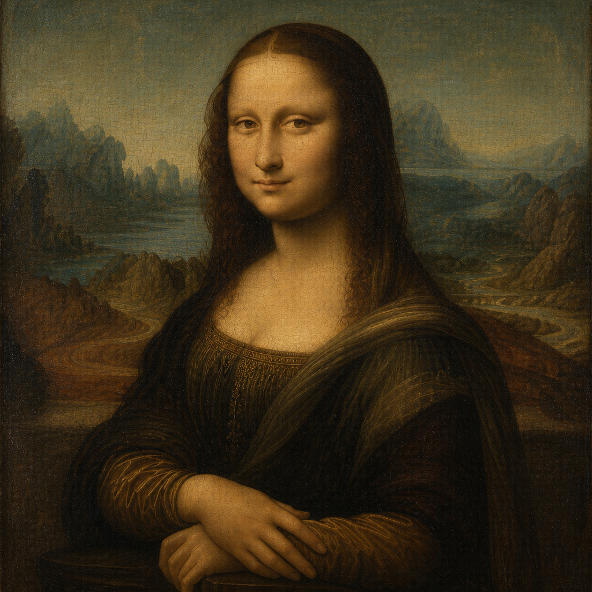
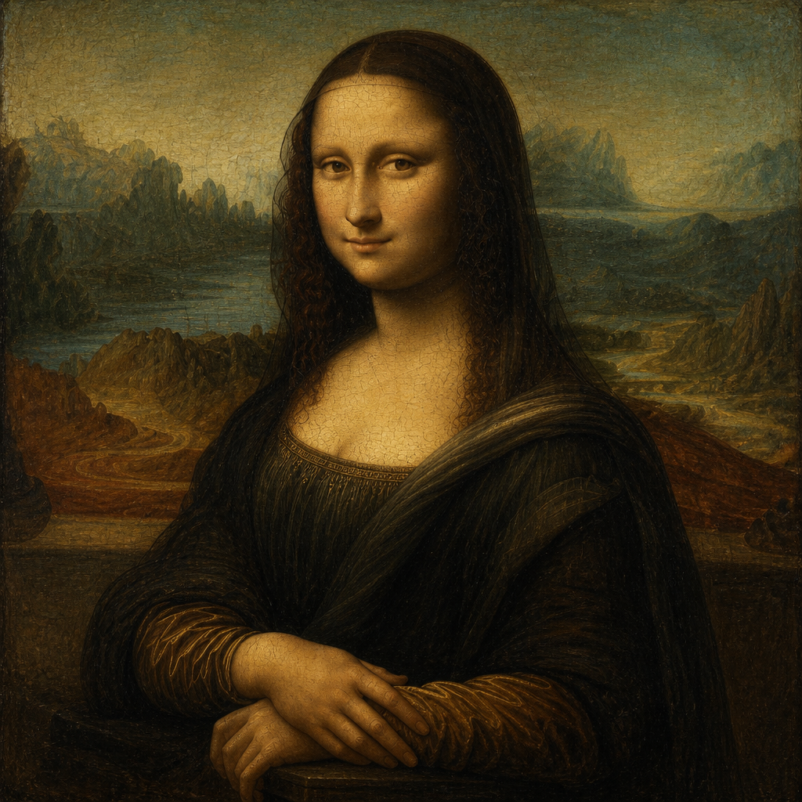
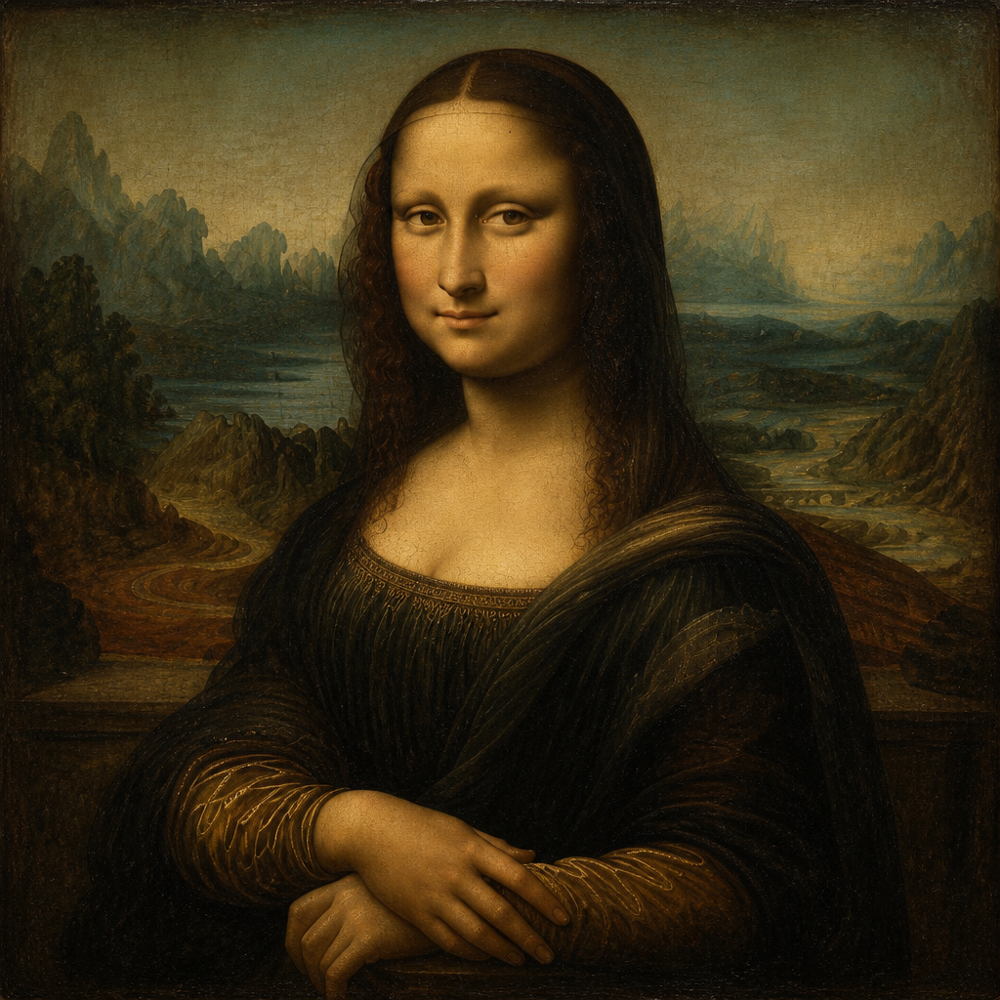
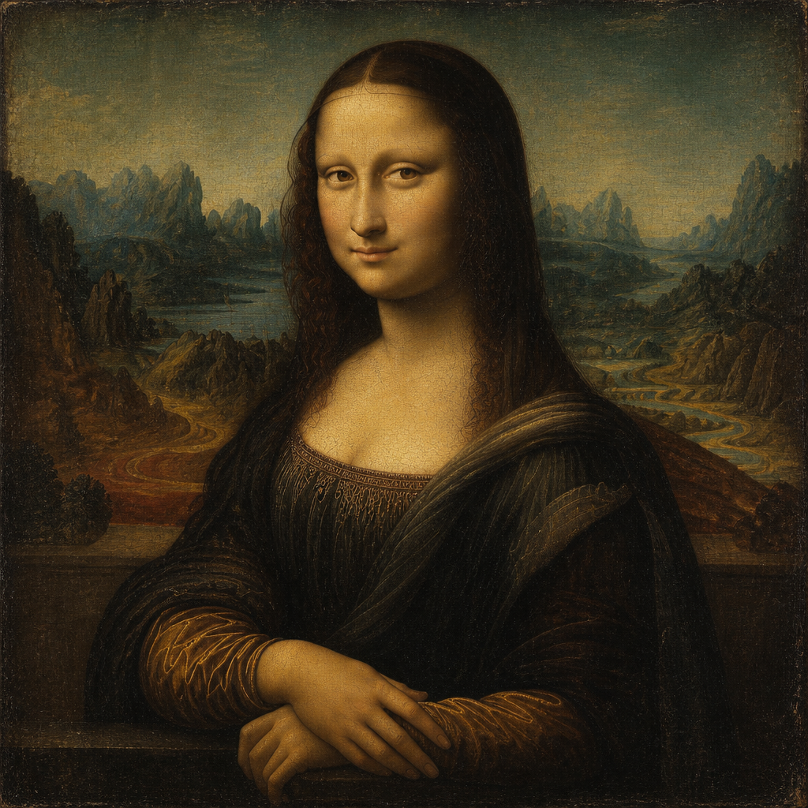
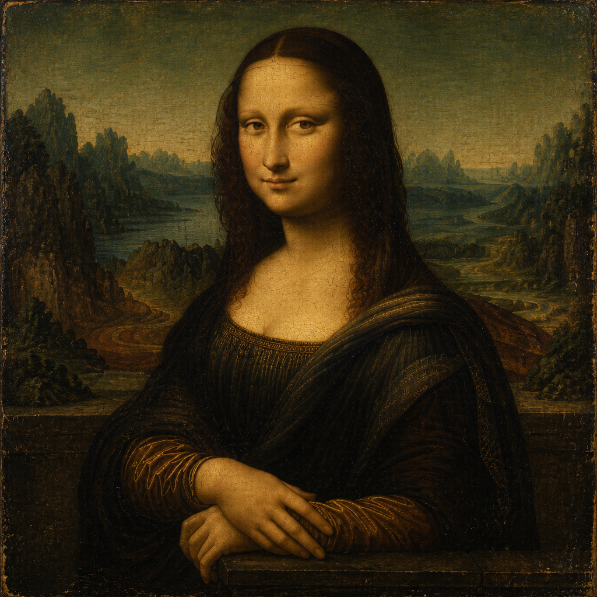
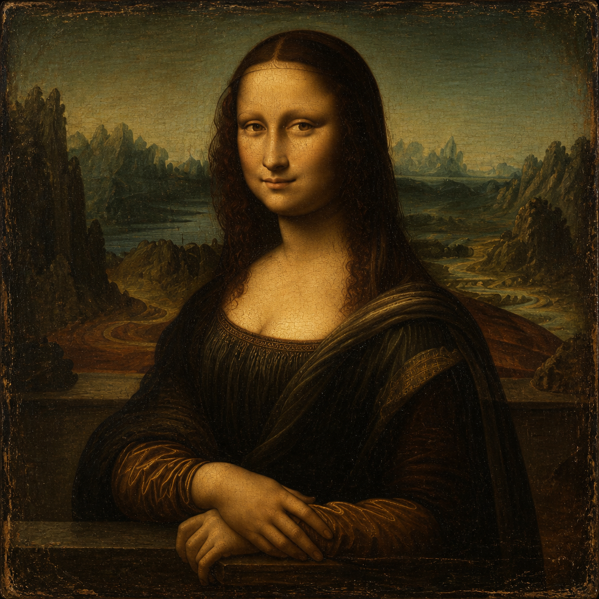
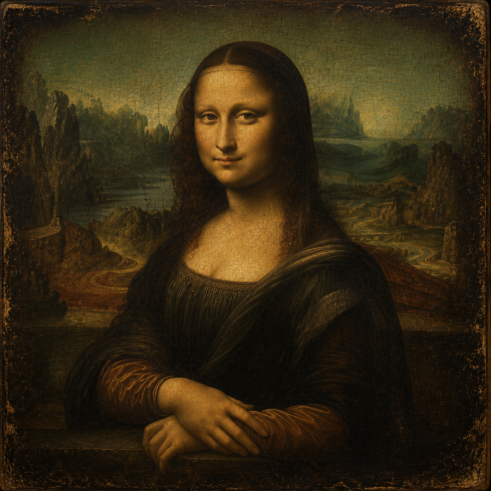
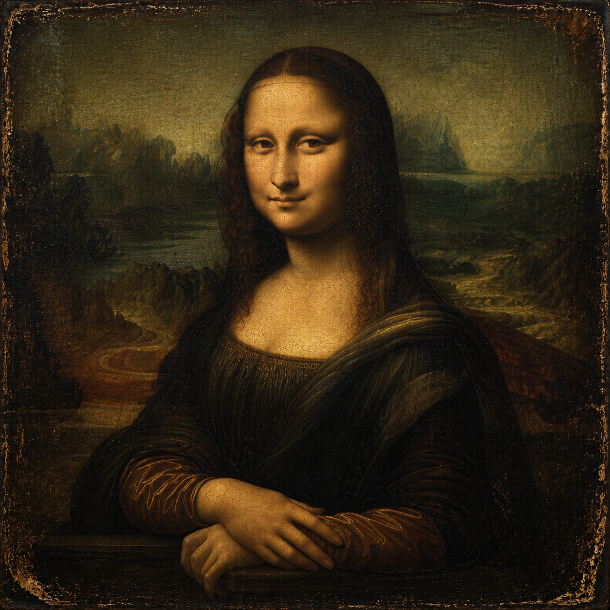
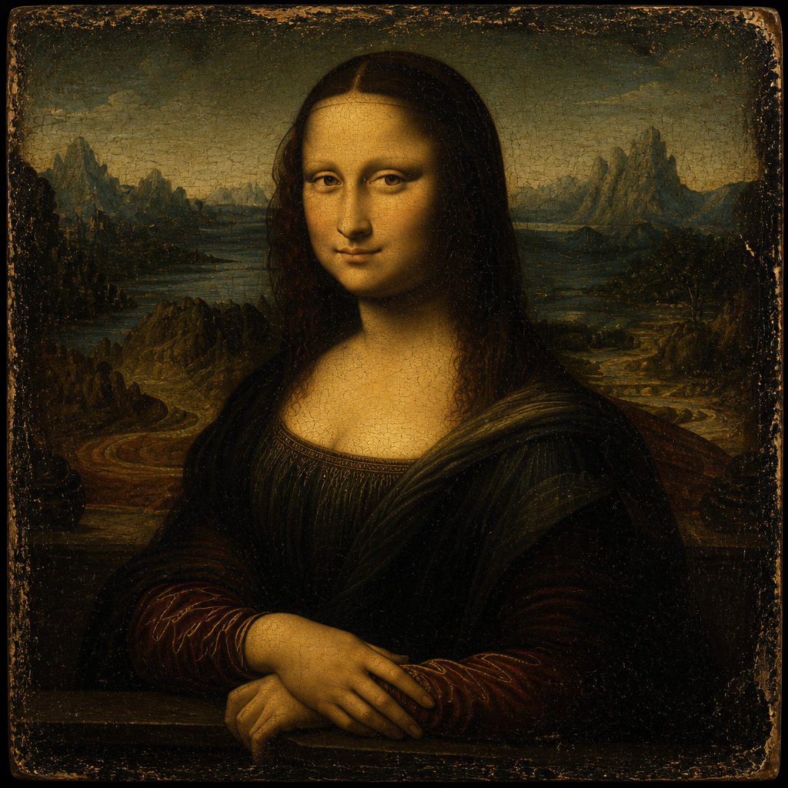
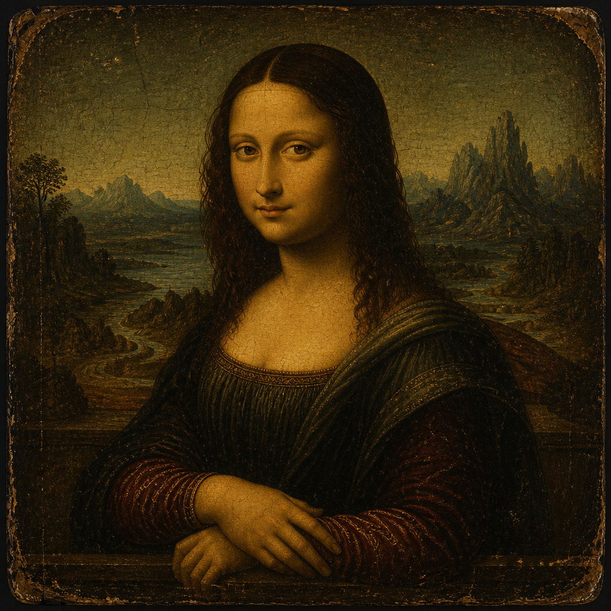

Text that produced this image
This is the original image seed; no text produced it.
A vertically oriented Renaissance oil portrait of a seated young woman shown from the waist up in three-quarter view, her torso angled slightly left while her face turns toward the viewer. She has pale golden skin, a high smooth forehead, softly arched nearly invisible eyebrows, half-lidded brown eyes, a long straight nose, and a subtle closed-mouth smile.











These values compare images only; generated and source text are not included. The displayed raw distance uses the single-branch DreamSim OpenCLIP ViT-B/32 model. DreamSim compares learned visual features that reflect both overall meaning and lower-level appearance, producing a smaller distance when two images look more alike.
This is the original image seed; no text produced it.
A vertically oriented Renaissance oil portrait of a seated young woman shown from the waist up in three-quarter view, her torso angled slightly left while her face turns toward the viewer. She has pale golden skin, a high smooth forehead, softly arched nearly invisible eyebrows, half-lidded brown eyes, a long straight nose, and a subtle closed-mouth smile. Her dark brown hair is center-parted and falls in long, smooth waves past her shoulders. She wears a dark brown-black gown with a low, softly rounded neckline, fine gold embroidery along the bodice, warm brown gathered sleeves, and a muted olive-brown translucent shawl draped diagonally over her right shoulder. Her forearms rest calmly on the arm of a chair or ledge at the bottom of the composition. Her right hand lies gently over her left wrist, with long relaxed fingers; the left hand is partially visible beneath. Behind her is a hazy, imaginary landscape viewed from an elevated position: winding pale roads or rivers, blue-green water, rocky reddish-brown formations, distant jagged mountains, and soft atmospheric valleys fading into a muted green-blue sky. The horizon heights differ on either side of her head. Lighting is soft and diffuse, warmly illuminating her face, chest, and hands while the clothing remains in deep shadow. The painting uses subtle smoky transitions, subdued earth tones, olive greens, ochres, browns, and blue-gray greens. The entire surface has visible aged varnish, fine crackling, and worn oil-paint texture. No text is present.
A vertically oriented Renaissance oil portrait of a seated young woman shown from the waist up in three-quarter view, her torso angled slightly left while her face turns toward the viewer. She has pale golden skin, a high smooth forehead, softly arched nearly invisible eyebrows, half-lidded brown eyes, a long straight nose, and a subtle closed-mouth smile. Her dark brown hair is center-parted and falls in long, smooth waves past her shoulders. She wears a dark brown-black gown with a low, softly rounded neckline, fine gold embroidery along the bodice, warm brown gathered sleeves, and a muted olive-brown translucent shawl draped diagonally over her right shoulder. Her forearms rest calmly on the arm of a chair or ledge at the bottom of the composition. Her right hand lies gently over her left wrist, with long relaxed fingers; the left hand is partially visible beneath. Behind her is a hazy, imaginary landscape viewed from an elevated position: winding pale roads or rivers, blue-green water, rocky reddish-brown formations, distant jagged mountains, and soft atmospheric valleys fading into a muted green-blue sky. The horizon heights differ on either side of her head. Lighting is soft and diffuse, warmly illuminating her face, chest, and hands while the clothing remains in deep shadow. The painting uses subtle smoky transitions, subdued earth tones, olive greens, ochres, browns, and blue-gray greens. The entire surface has visible aged varnish, fine crackling, and worn oil-paint texture. No text is present.
A square-format Renaissance oil portrait of a seated young woman shown from the waist up, centered against a distant mountainous landscape. She is turned slightly three-quarters toward the viewer’s left while looking directly outward with a calm, faintly enigmatic smile. Her face is softly modeled, with a high forehead, arched brows, almond-shaped brown eyes, a long straight nose, and softly closed lips. Long dark brown hair, center-parted and mostly covered by a translucent dark veil, falls around her shoulders in subtle waves. She wears a dark brown-black gown with a low, gently curved neckline edged in intricate gold embroidery. A heavy dark mantle drapes diagonally over her right shoulder and across her torso. The sleeves are warm brown with muted golden highlights and fine gathered folds. Her forearms rest on the arm of a dark chair or ledge at the bottom; one hand lies gracefully over the other, with long relaxed fingers. Behind her is an atmospheric, imaginary landscape viewed from above: winding pale roads or rivers, rocky outcrops, valleys, distant jagged mountains, and hazy blue-green water. The horizon sits high behind her head, with misty ochre and blue-gray skies. Darker rust-brown terrain fills the lower background, while craggy formations frame both sides. Lighting is soft and diffuse, illuminating the face, neck, chest, and hands with warm golden-brown tones while the clothing remains deep and shadowed. The entire image has a muted palette of umber, olive, ochre, charcoal, and smoky blue-green. The surface shows pronounced fine craquelure and aged varnish, giving the painting a centuries-old, slightly darkened texture. Highly detailed, naturalistic Renaissance oil painting with subtle atmospheric perspective, soft transitions, and no visible text.
A square-format Renaissance oil portrait of a seated young woman shown from the waist up, centered against a distant mountainous landscape. She is turned slightly three-quarters toward the viewer’s left while looking directly outward with a calm, faintly enigmatic smile. Her face is softly modeled, with a high forehead, arched brows, almond-shaped brown eyes, a long straight nose, and softly closed lips. Long dark brown hair, center-parted and mostly covered by a translucent dark veil, falls around her shoulders in subtle waves. She wears a dark brown-black gown with a low, gently curved neckline edged in intricate gold embroidery. A heavy dark mantle drapes diagonally over her right shoulder and across her torso. The sleeves are warm brown with muted golden highlights and fine gathered folds. Her forearms rest on the arm of a dark chair or ledge at the bottom; one hand lies gracefully over the other, with long relaxed fingers. Behind her is an atmospheric, imaginary landscape viewed from above: winding pale roads or rivers, rocky outcrops, valleys, distant jagged mountains, and hazy blue-green water. The horizon sits high behind her head, with misty ochre and blue-gray skies. Darker rust-brown terrain fills the lower background, while craggy formations frame both sides. Lighting is soft and diffuse, illuminating the face, neck, chest, and hands with warm golden-brown tones while the clothing remains deep and shadowed. The entire image has a muted palette of umber, olive, ochre, charcoal, and smoky blue-green. The surface shows pronounced fine craquelure and aged varnish, giving the painting a centuries-old, slightly darkened texture. Highly detailed, naturalistic Renaissance oil painting with subtle atmospheric perspective, soft transitions, and no visible text.
A square-format Renaissance oil portrait of a seated young woman shown from the waist up, centered against a distant landscape. Her body is turned slightly toward the viewer’s right while her face looks directly outward with a restrained, enigmatic half-smile. She has a broad smooth forehead, softly arched brows, almond-shaped brown eyes, a long straight nose, and warm golden-olive skin. Dark brown, center-parted hair falls in long subtle waves on both sides of her face and merges into a nearly black translucent veil. She wears a dark, low square-necked gown with fine gold embroidery along the neckline and warm brown-gold patterned sleeves. A heavy black drape crosses over her left shoulder. Her forearms rest on a dark ledge at the bottom of the composition; one hand lies gently across the opposite wrist and forearm, with elongated relaxed fingers. Behind her is an atmospheric, fantastical landscape of winding roads and waterways, rust-brown rocky ground, steep jagged mountains, and blue-green distant peaks beneath a muted hazy sky. The horizon sits around shoulder height and appears lower on the right. Lighting is soft, warm, and frontal, illuminating the face, chest, and hands while the clothing remains in deep shadow. The palette is subdued ochre, umber, olive, charcoal black, and dusty blue-green. The image has aged varnish, darkened edges, fine surface cracks and craquelure throughout, delicate sfumato transitions, and highly detailed classical oil-paint texture. No visible text.
A square-format Renaissance oil portrait of a seated young woman shown from the waist up, centered against a distant landscape. Her body is turned slightly toward the viewer’s right while her face looks directly outward with a restrained, enigmatic half-smile. She has a broad smooth forehead, softly arched brows, almond-shaped brown eyes, a long straight nose, and warm golden-olive skin. Dark brown, center-parted hair falls in long subtle waves on both sides of her face and merges into a nearly black translucent veil. She wears a dark, low square-necked gown with fine gold embroidery along the neckline and warm brown-gold patterned sleeves. A heavy black drape crosses over her left shoulder. Her forearms rest on a dark ledge at the bottom of the composition; one hand lies gently across the opposite wrist and forearm, with elongated relaxed fingers. Behind her is an atmospheric, fantastical landscape of winding roads and waterways, rust-brown rocky ground, steep jagged mountains, and blue-green distant peaks beneath a muted hazy sky. The horizon sits around shoulder height and appears lower on the right. Lighting is soft, warm, and frontal, illuminating the face, chest, and hands while the clothing remains in deep shadow. The palette is subdued ochre, umber, olive, charcoal black, and dusty blue-green. The image has aged varnish, darkened edges, fine surface cracks and craquelure throughout, delicate sfumato transitions, and highly detailed classical oil-paint texture. No visible text.
Square-format Renaissance oil portrait of a seated young woman shown from the waist up, centered and turned slightly toward the viewer’s left while looking directly outward. She has a softly rounded face, pale golden-olive skin, a high forehead with nearly invisible eyebrows, almond-shaped brown eyes, a long straight nose, and a subtle closed-mouth smile. Her dark brown hair is center-parted, smooth over the crown, and falls in long, slightly wavy strands over both shoulders. She wears a very dark brown-black Renaissance gown with a low square neckline, delicate gold embroidery along the bodice edge, and warm brown sleeves decorated with fine gold linear patterns. A dark translucent shawl drapes over her left shoulder and across her torso. Her forearms rest on a dark horizontal ledge at the bottom; her right hand lies gently over her left wrist, with elongated relaxed fingers. Behind her is an expansive imaginary landscape viewed from above: winding ochre roads, dark rocky hills, blue-green river valleys, distant jagged mountains, and a hazy muted teal-gold sky. The horizon is high, framing her head and shoulders. Lighting is soft and diffuse, illuminating the face, chest, and hands while the clothing and corners remain deeply shadowed. Use subdued earthy browns, black, amber-gold skin tones, smoky blue-green distance, delicate sfumato transitions, fine glazing, aged varnish, visible craquelure, and darkened worn edges. No text.
Square-format Renaissance oil portrait of a seated young woman shown from the waist up, centered and turned slightly toward the viewer’s left while looking directly outward. She has a softly rounded face, pale golden-olive skin, a high forehead with nearly invisible eyebrows, almond-shaped brown eyes, a long straight nose, and a subtle closed-mouth smile. Her dark brown hair is center-parted, smooth over the crown, and falls in long, slightly wavy strands over both shoulders. She wears a very dark brown-black Renaissance gown with a low square neckline, delicate gold embroidery along the bodice edge, and warm brown sleeves decorated with fine gold linear patterns. A dark translucent shawl drapes over her left shoulder and across her torso. Her forearms rest on a dark horizontal ledge at the bottom; her right hand lies gently over her left wrist, with elongated relaxed fingers. Behind her is an expansive imaginary landscape viewed from above: winding ochre roads, dark rocky hills, blue-green river valleys, distant jagged mountains, and a hazy muted teal-gold sky. The horizon is high, framing her head and shoulders. Lighting is soft and diffuse, illuminating the face, chest, and hands while the clothing and corners remain deeply shadowed. Use subdued earthy browns, black, amber-gold skin tones, smoky blue-green distance, delicate sfumato transitions, fine glazing, aged varnish, visible craquelure, and darkened worn edges. No text.
A square-format Renaissance-style oil portrait of a seated young woman, shown from the waist up in a three-quarter pose behind a dark stone parapet. She occupies the center foreground, with her torso angled slightly to the viewer’s right while her face turns toward the viewer. Her expression is calm and enigmatic, with a faint closed-mouth smile, softly modeled cheeks, almond-shaped brown eyes, a straight nose, and nearly invisible eyebrows. Her pale golden-olive skin is illuminated by warm, diffuse light. Her long, dark brown hair is center-parted, smooth over the crown, and falls in loose subtle waves along both sides of her face and shoulders. She wears a dark brown-black Renaissance gown with a low square neckline edged in delicate gold embroidery. A heavy dark mantle drapes over her shoulders in broad folds. The sleeves are deep brown with warm ochre-gold highlights and intricate folded or stitched patterns. Her hands rest gracefully crossed at the bottom center: one forearm lies horizontally while the upper hand extends diagonally across it, with long relaxed fingers. Behind her is an expansive imaginary landscape viewed from above: rugged bluish-green mountains and jagged rock formations on both sides, a winding river or road threading through valleys, distant water, and layered hills fading toward the horizon. The sky is muted teal-green and ochre, with atmospheric haze and no distinct clouds. Dark rocky masses frame the landscape near both edges. The image has aged oil-paint texture throughout, including fine craquelure, worn pigments, subtle scratches, darkened varnish, and distressed edges. The palette is dominated by deep umber, black, muted green, ochre, and warm gold. Soft chiaroscuro gives the face and hands a gentle glow against the dark clothing and shadowed landscape. No visible text.
A square-format Renaissance-style oil portrait of a seated young woman, shown from the waist up in a three-quarter pose behind a dark stone parapet. She occupies the center foreground, with her torso angled slightly to the viewer’s right while her face turns toward the viewer. Her expression is calm and enigmatic, with a faint closed-mouth smile, softly modeled cheeks, almond-shaped brown eyes, a straight nose, and nearly invisible eyebrows. Her pale golden-olive skin is illuminated by warm, diffuse light. Her long, dark brown hair is center-parted, smooth over the crown, and falls in loose subtle waves along both sides of her face and shoulders. She wears a dark brown-black Renaissance gown with a low square neckline edged in delicate gold embroidery. A heavy dark mantle drapes over her shoulders in broad folds. The sleeves are deep brown with warm ochre-gold highlights and intricate folded or stitched patterns. Her hands rest gracefully crossed at the bottom center: one forearm lies horizontally while the upper hand extends diagonally across it, with long relaxed fingers. Behind her is an expansive imaginary landscape viewed from above: rugged bluish-green mountains and jagged rock formations on both sides, a winding river or road threading through valleys, distant water, and layered hills fading toward the horizon. The sky is muted teal-green and ochre, with atmospheric haze and no distinct clouds. Dark rocky masses frame the landscape near both edges. The image has aged oil-paint texture throughout, including fine craquelure, worn pigments, subtle scratches, darkened varnish, and distressed edges. The palette is dominated by deep umber, black, muted green, ochre, and warm gold. Soft chiaroscuro gives the face and hands a gentle glow against the dark clothing and shadowed landscape. No visible text.
A square-format Renaissance oil portrait of a seated young woman shown from the waist up, centered against a distant atmospheric landscape. She is turned slightly toward the viewer’s left while facing forward, with calm brown eyes, a faint enigmatic smile, softly modeled cheeks, no visible eyebrows, and a warm golden-olive complexion. Her long dark brown hair is center-parted, smooth over the crown, and falls in loose subtle curls around her shoulders. She wears a nearly black, low square-necked gown with fine gold embroidery along the neckline and gathered bodice, plus brown-gold patterned sleeves. A heavy dark mantle drapes over her left shoulder and across her torso, edged with delicate gold ornament. Her forearms rest on a dark stone ledge at the bottom; one hand lies gently across the opposite wrist, with long relaxed fingers. Behind her is an expansive blue-green and ochre landscape with winding roads or rivers, layered valleys, rocky cliffs, jagged mountain formations, and distant hazy peaks. Tall dark rock masses frame both sides, while a muted greenish sky fades into warm haze near the horizon. The lighting is soft and diffuse, illuminating the face, chest, and hands while the clothing remains shadowy. The image has an aged oil-painting surface with visible craquelure, darkened varnish, worn edges, scratches, and a distressed black-brown border. The palette is subdued and antique: deep umber, black, olive green, muted teal, ochre, and warm gold. No text is visible.
A square-format Renaissance oil portrait of a seated young woman shown from the waist up, centered against a distant atmospheric landscape. She is turned slightly toward the viewer’s left while facing forward, with calm brown eyes, a faint enigmatic smile, softly modeled cheeks, no visible eyebrows, and a warm golden-olive complexion. Her long dark brown hair is center-parted, smooth over the crown, and falls in loose subtle curls around her shoulders. She wears a nearly black, low square-necked gown with fine gold embroidery along the neckline and gathered bodice, plus brown-gold patterned sleeves. A heavy dark mantle drapes over her left shoulder and across her torso, edged with delicate gold ornament. Her forearms rest on a dark stone ledge at the bottom; one hand lies gently across the opposite wrist, with long relaxed fingers. Behind her is an expansive blue-green and ochre landscape with winding roads or rivers, layered valleys, rocky cliffs, jagged mountain formations, and distant hazy peaks. Tall dark rock masses frame both sides, while a muted greenish sky fades into warm haze near the horizon. The lighting is soft and diffuse, illuminating the face, chest, and hands while the clothing remains shadowy. The image has an aged oil-painting surface with visible craquelure, darkened varnish, worn edges, scratches, and a distressed black-brown border. The palette is subdued and antique: deep umber, black, olive green, muted teal, ochre, and warm gold. No text is visible.
A square-format Renaissance oil portrait closely resembling the Mona Lisa. A seated adult woman is shown from the waist up in a three-quarter pose, centered against a distant atmospheric landscape. Her torso turns slightly toward the viewer’s right while her face looks directly outward. She has pale golden-olive skin, an oval face, softly modeled cheeks, narrow brown eyes, an elongated straight nose, thin brows, and a subtle closed-mouth smile. Long, dark brown, center-parted hair falls in loose waves over both shoulders. She wears a nearly black, low square-necked Renaissance gown with fine vertical pleating and narrow gold embroidered trim around the neckline. A dark mantle drapes diagonally over her right shoulder and across her torso. The sleeves are deep reddish brown with warm ochre-gold highlights and decorative curved stitching. Her forearms rest on a dark stone or wooden ledge at the bottom of the image; one hand lies gracefully across the opposite wrist, with long relaxed fingers, while the lower hand rests along the ledge. Behind her is a fantastical rugged landscape painted in muted blue-green, olive, umber, and ochre tones: tall jagged rock formations frame both sides, layered mountains recede toward the horizon, and winding pale roads or rivers snake through valleys on the right and left. The horizon sits around shoulder level beneath a hazy greenish sky. The lighting is soft and directional, warmly illuminating the face, chest, and hands while the clothing and foreground remain in deep shadow. The image has strong chiaroscuro, smoky sfumato transitions, subdued earthy colors, and a dark amber cast. Fine age-related craquelure covers the entire painted surface. The outer edges are heavily distressed and darkened, with worn golden-brown abrasions and an antique varnished patina, giving the portrait the appearance of an old Renaissance panel painting. No text is visible.
A square-format Renaissance oil portrait closely resembling the Mona Lisa. A seated adult woman is shown from the waist up in a three-quarter pose, centered against a distant atmospheric landscape. Her torso turns slightly toward the viewer’s right while her face looks directly outward. She has pale golden-olive skin, an oval face, softly modeled cheeks, narrow brown eyes, an elongated straight nose, thin brows, and a subtle closed-mouth smile. Long, dark brown, center-parted hair falls in loose waves over both shoulders. She wears a nearly black, low square-necked Renaissance gown with fine vertical pleating and narrow gold embroidered trim around the neckline. A dark mantle drapes diagonally over her right shoulder and across her torso. The sleeves are deep reddish brown with warm ochre-gold highlights and decorative curved stitching. Her forearms rest on a dark stone or wooden ledge at the bottom of the image; one hand lies gracefully across the opposite wrist, with long relaxed fingers, while the lower hand rests along the ledge. Behind her is a fantastical rugged landscape painted in muted blue-green, olive, umber, and ochre tones: tall jagged rock formations frame both sides, layered mountains recede toward the horizon, and winding pale roads or rivers snake through valleys on the right and left. The horizon sits around shoulder level beneath a hazy greenish sky. The lighting is soft and directional, warmly illuminating the face, chest, and hands while the clothing and foreground remain in deep shadow. The image has strong chiaroscuro, smoky sfumato transitions, subdued earthy colors, and a dark amber cast. Fine age-related craquelure covers the entire painted surface. The outer edges are heavily distressed and darkened, with worn golden-brown abrasions and an antique varnished patina, giving the portrait the appearance of an old Renaissance panel painting. No text is visible.
A square-format Renaissance oil portrait closely resembling Leonardo da Vinci’s Mona Lisa. A seated woman is shown from the waist up in a three-quarter pose, centered against a distant mountainous landscape. Her torso angles slightly to the viewer’s right while her face turns forward, meeting the viewer with a calm, faintly enigmatic smile. She has pale warm-ochre skin, softly modeled features, dark almond-shaped eyes, no visible eyebrows, and long dark brown hair parted at the center and falling loosely over both shoulders. She wears a nearly black, low square-necked Renaissance gown with subtle gathered pleats and narrow gold embroidery along the neckline. A heavy dark mantle drapes diagonally across her right shoulder and chest. Her sleeves are muted reddish brown with fine gold linear ornament. Her forearms rest on a dark ledge at the bottom; one hand lies gracefully over the opposite wrist and hand, with long relaxed fingers. The background is an atmospheric, fantastical landscape of jagged dark rock formations, winding pale roads or rivers, valleys, and distant blue-green mountains beneath a murky olive-green sky. The horizon is high, roughly level with her shoulders and head. Lighting is soft and directional, illuminating the face, chest, and hands with warm golden tones while the clothing and edges recede into deep shadow. The palette is dominated by aged browns, black, ochre, olive green, and muted teal. The entire image has the appearance of a centuries-old oil painting on wood: fine craquelure covers the face, sky, clothing, and background; the surface is darkened by amber varnish; the corners and edges are heavily worn, blackened, scratched, and mottled with gold-brown abrasions, creating an irregular antique border. Soft sfumato transitions, subdued contrast, meticulous realism, and a solemn museum-masterpiece atmosphere. No visible text.
A square-format Renaissance oil portrait closely resembling Leonardo da Vinci’s Mona Lisa. A seated woman is shown from the waist up in a three-quarter pose, centered against a distant mountainous landscape. Her torso angles slightly to the viewer’s right while her face turns forward, meeting the viewer with a calm, faintly enigmatic smile. She has pale warm-ochre skin, softly modeled features, dark almond-shaped eyes, no visible eyebrows, and long dark brown hair parted at the center and falling loosely over both shoulders. She wears a nearly black, low square-necked Renaissance gown with subtle gathered pleats and narrow gold embroidery along the neckline. A heavy dark mantle drapes diagonally across her right shoulder and chest. Her sleeves are muted reddish brown with fine gold linear ornament. Her forearms rest on a dark ledge at the bottom; one hand lies gracefully over the opposite wrist and hand, with long relaxed fingers. The background is an atmospheric, fantastical landscape of jagged dark rock formations, winding pale roads or rivers, valleys, and distant blue-green mountains beneath a murky olive-green sky. The horizon is high, roughly level with her shoulders and head. Lighting is soft and directional, illuminating the face, chest, and hands with warm golden tones while the clothing and edges recede into deep shadow. The palette is dominated by aged browns, black, ochre, olive green, and muted teal. The entire image has the appearance of a centuries-old oil painting on wood: fine craquelure covers the face, sky, clothing, and background; the surface is darkened by amber varnish; the corners and edges are heavily worn, blackened, scratched, and mottled with gold-brown abrasions, creating an irregular antique border. Soft sfumato transitions, subdued contrast, meticulous realism, and a solemn museum-masterpiece atmosphere. No visible text.
A square-format Renaissance-style oil portrait of a seated young woman, shown from the waist up in a three-quarter pose against a distant landscape. She occupies the center, facing slightly toward the viewer’s left while looking directly outward with a calm, restrained expression and a subtle closed-mouth smile. Her oval face has softly modeled warm golden skin, a high forehead, thin arched brows, almond-shaped brown eyes, a long straight nose, and rounded cheeks. Dark brown, center-parted hair falls smoothly past her shoulders and blends into the shadows. She wears a nearly black, low square-necked gown with fine vertical pleating and a dark draped mantle crossing over her right shoulder. The sleeves are deep reddish brown, decorated near the wrists with delicate curved gold embroidery. Her forearms rest on a dark wooden ledge at the bottom of the composition; one hand lies gently over the opposite wrist, with long relaxed fingers crossing at center. Behind her is an atmospheric, fantastical landscape in muted olive green, brown, and smoky blue-gray: winding roads or waterways, rocky hills, distant jagged mountains, and hazy valleys receding toward a high horizon. Soft warm light illuminates the face, upper chest, and hands, while the clothing and corners remain heavily shadowed. The painting has pronounced aged varnish, dense craquelure across the entire surface, darkened tones, worn edges, scratches, and an irregular distressed black-and-gold border. No text is visible.
A square-format Renaissance-style oil portrait of a seated young woman, shown from the waist up in a three-quarter pose against a distant landscape. She occupies the center, facing slightly toward the viewer’s left while looking directly outward with a calm, restrained expression and a subtle closed-mouth smile. Her oval face has softly modeled warm golden skin, a high forehead, thin arched brows, almond-shaped brown eyes, a long straight nose, and rounded cheeks. Dark brown, center-parted hair falls smoothly past her shoulders and blends into the shadows. She wears a nearly black, low square-necked gown with fine vertical pleating and a dark draped mantle crossing over her right shoulder. The sleeves are deep reddish brown, decorated near the wrists with delicate curved gold embroidery. Her forearms rest on a dark wooden ledge at the bottom of the composition; one hand lies gently over the opposite wrist, with long relaxed fingers crossing at center. Behind her is an atmospheric, fantastical landscape in muted olive green, brown, and smoky blue-gray: winding roads or waterways, rocky hills, distant jagged mountains, and hazy valleys receding toward a high horizon. Soft warm light illuminates the face, upper chest, and hands, while the clothing and corners remain heavily shadowed. The painting has pronounced aged varnish, dense craquelure across the entire surface, darkened tones, worn edges, scratches, and an irregular distressed black-and-gold border. No text is visible.
A square, aged Renaissance-style oil portrait of a seated young woman shown from the waist up in three-quarter view, her torso angled slightly right while her face turns toward the viewer. She has pale golden-olive skin, an oval face, softly arched brows, almond-shaped brown eyes, a long straight nose, and a subtle closed-mouth smile. Her dark brown hair is center-parted, smooth over the crown, and falls in long loose waves around her shoulders. She wears a nearly black, low square-necked dress with fine vertical pleating and narrow gold trim along the neckline. A dark green-black draped mantle crosses her right shoulder. Deep burgundy sleeves emerge beneath the dark outer garment, decorated with thin curving gold embroidery. Her forearms rest on a dark horizontal ledge at the bottom of the image; one hand lies gracefully across the opposite wrist, with long relaxed fingers, while the lower hand is partly visible beneath. Behind her is a muted, atmospheric landscape with winding paths or water, dark rocky outcrops, sparse trees, distant blue-gray mountains, and tall jagged peaks on the right. The horizon sits around shoulder height beneath a hazy greenish-gold sky. Lighting is soft and frontal, illuminating the face, chest, and hands in warm ochre tones while the clothing and edges remain heavily shadowed. The entire image has a dark amber-brown patina, dense fine craquelure across the painted surface, visible scratches, fading, and distressed blackened edges with chipped gold-brown abrasions. The corners are rounded and worn, creating the appearance of a centuries-old panel painting. No text is visible.
A square, aged Renaissance-style oil portrait of a seated young woman shown from the waist up in three-quarter view, her torso angled slightly right while her face turns toward the viewer. She has pale golden-olive skin, an oval face, softly arched brows, almond-shaped brown eyes, a long straight nose, and a subtle closed-mouth smile. Her dark brown hair is center-parted, smooth over the crown, and falls in long loose waves around her shoulders. She wears a nearly black, low square-necked dress with fine vertical pleating and narrow gold trim along the neckline. A dark green-black draped mantle crosses her right shoulder. Deep burgundy sleeves emerge beneath the dark outer garment, decorated with thin curving gold embroidery. Her forearms rest on a dark horizontal ledge at the bottom of the image; one hand lies gracefully across the opposite wrist, with long relaxed fingers, while the lower hand is partly visible beneath. Behind her is a muted, atmospheric landscape with winding paths or water, dark rocky outcrops, sparse trees, distant blue-gray mountains, and tall jagged peaks on the right. The horizon sits around shoulder height beneath a hazy greenish-gold sky. Lighting is soft and frontal, illuminating the face, chest, and hands in warm ochre tones while the clothing and edges remain heavily shadowed. The entire image has a dark amber-brown patina, dense fine craquelure across the painted surface, visible scratches, fading, and distressed blackened edges with chipped gold-brown abrasions. The corners are rounded and worn, creating the appearance of a centuries-old panel painting. No text is visible.
No description was generated after this image.